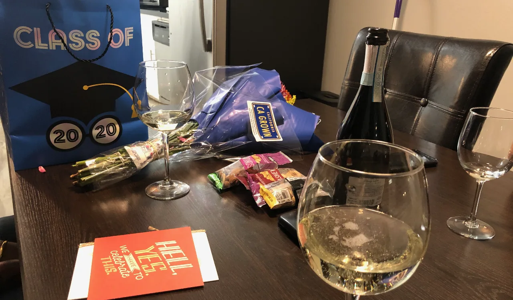

Live → Blog
July 1, 2020

Farewell to June. We started this month amid protests seeking justice for the recent fatal acts of police brutality and white supremacy against black people in the United States. George Floyd, Breonna Taylor, and many who have been murdered since the beginning of the month. While the pessimist in me was not shocked by this, I remain sad that this is expectable. I got to reflect on my blackness with my friend and YouTuber Niharika Talwar (aka AwesomeGlosome). The interview - which had to be redacted for brevity - comes in two parts: part 1 and part 2.
Meanwhile, countries and organizations around the world continued to think through how to recover from covid-19 related disruptions to their normal operations. The UK - with Boris Johnson's hard to follow updates - provided some comic relief (WTF is 1 meter plus?), and the US -with the structural racism that exposes black people and marginalized communities to the worst of covid - shattered my heart to a million pieces, again. Do not even get me started on my very own Botswana. What exactly is the plan with the Economic Recovery Plan?
These environmental factors inspired me to reflect on the role of institutions in safeguarding our interests, especially at times of heightened vulnerability such as now. What do our institutions owe us? I hope to put some of these reflections into a blog post in either July or August.
This month marked the end of Spring Quarter at Stanford and the beginning of the Summer Quarter. With the end of Spring, so did our project class on covid-19, MS&E 433. My project team and I attempted to contribute towards the covid-19 response efforts in Botswana. We looked at the growing threat of covid transmission through truck drivers transporting essential goods between countries in Southern Africa. We shared our preliminary insights in this video.
With a new team, we have started refining the SIR model and incorporating the cost of the intervention strategies into our covid dynamics optimization. I expect to reflect on my experience with this covid project in August or September. It is thrilling to I know I am in the right field. Is a PhD in my destiny?
June also marked the beginning of my remote internship with Tsoga Africa, a company whose mission resonates with mine. Their mission is to use collaborative action to design, develop, and manufacture locally, the critical products and services needed to grow and diversify the economy of Botswana. My role, which is self-designed based on the value I believe I can offer, is that of a Decision Analyst intern. I am using my training in decision and risk analysis to help them through their due diligence process as they consider strategic partnerships for their work.
It is such an opportune time to work with Tsoga, as The Great Lockdown and the continuing racial tension in the United States remind me of why I intend to return to the African continent sooner rather than later. Of course the question of the exact timing to return is always a difficult one. I was fortunate to reflect on it, amongst other things, with my brother Avthar in a Facebook Live conversation this month. I always enjoy picking his brain, and I think you might too. Check out his weekly newsletter and consider subscribing to stay tuned to his updates.
Until the anticipated return, one still has to contribute in whatever small way he can towards building our country. Working with Tsoga is one way, and the other way is my annual collaboration with the Madigele family to honor the memory of Batho Madigele. This year, in partnership with Amy Mokgweetsi (of Amy's Fashion Atelier), we did so by donating 100 face masks to Mookami Junior Secondary School in Kanye (BW). In Goodhope (BW), we donated face masks to their primary school plus sponsored the erection of a sign board with important covid-19 prevention messages.
Batho taught us that no amount of adversity should stop academic excellence. The world has missed out on his greatness. But with these masks, we do not want it to miss out on the greatness of Botswana's young. I commend all the other nation builders, who like us, have donated masks to ensure students from underprivileged backgrounds also can return to school safely, and with their dignity. We build a nation by investing in its future.
On a more personal front, I continued to reflect on the tension between personal healing and communal healing from trauma. We also welcomed summer by celebrating one of our friends' graduation and a poolside picnic. No covid fashioned against our summer shall prosper. Until next month, remember to stay safe. Covid-19, racism, and incompetent leadership continue to threaten our wellbeing and future. Stay vigilant!
← Return to Blog